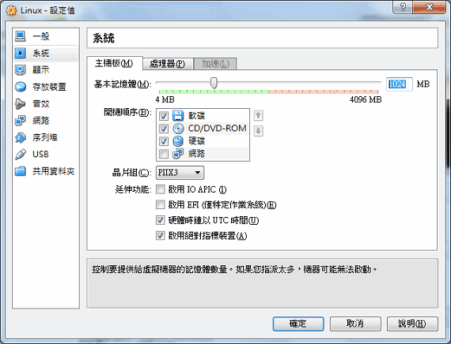
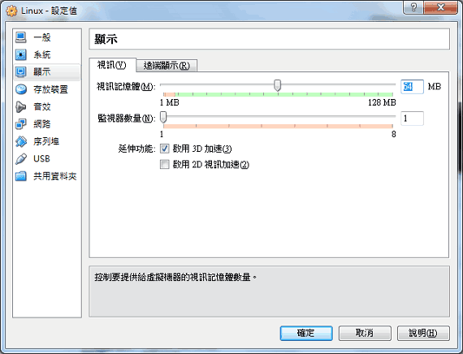
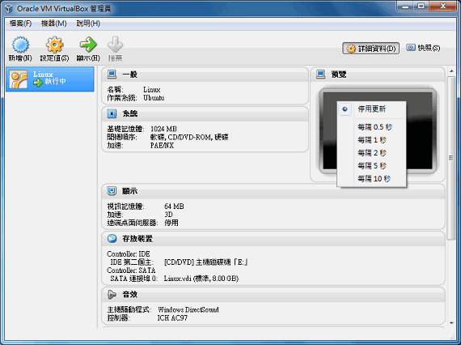
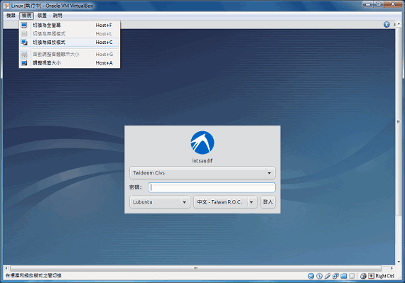
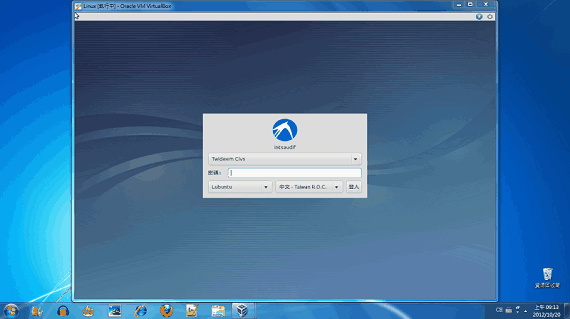
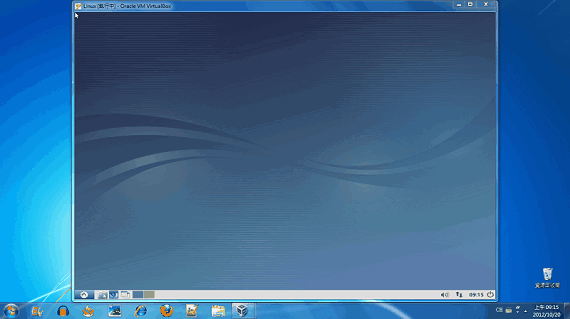
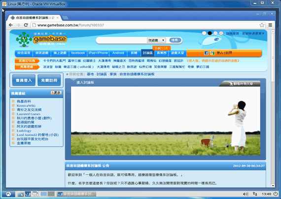

在 Windows 用 VirtualBox 安裝 Lubuntu
如果你是有興趣學習電腦技能的人，或許聽過 Linux 而且也很好奇那執行起來是怎麼一回事？本文將介紹如何在 Windows 7 使用 VirtualBox 4.2.2 安裝 Lubuntu 12.10！迅速（狂按下一步）、安全（不怕把 Windows 搞壞掉）地搭建一個操作起來相當流暢的 Linux 環境，無論練習也好、過過乾癮也好、甚至做為實際拿上應用的作業系統都可以。
VirtualBox 是 Oracle 免費讓大家下載使用的「虛擬軟體」，它可以讓我們在現有已安裝的作業系統底下，以應用程式的方式，安裝並運行其它作業系統。例如我在 Windows 7 以 VirtualBox 安裝 Lubuntu 12.10，這樣以後就能在 Windows 7 以應用軟體的方式啟動 Lubuntu 12.10。
Lubuntu 則是堪稱台灣之光的 Linux 發行版本[1]，這是目前常見的 Linux 發行版本中最輕巧的桌面型作業系統[2]！專門針對老舊硬體設備所開發，因此可說是跑起來最順暢的 Linux 桌面系統。要在 VitualBox 虛擬 Linux，Lunbuntu 可說是讓我們執行環境更加順暢的解決方案。（實際跑起來確實暢快許多，累格的情況，感覺上只有以往的 Ubuntu 的三分之一，已經直逼在 Windows 7 用 VirtualBox 跑 Windows XP 的暢快。）
準備下載所需軟體
１、請至 http://www.virtualbox.org 這個官方網站，下載 VirtualBox platform packages 以及 VirtualBox Oracle VM VirtualBox Extension Pack 共兩個軟體。
２、請至 http://lubuntu.net 這個官方網站，下載 Lubuntu 作業系統。
３、如果你不想燒一片 Lubuntu 光碟來安裝的話，請至 http://www.daemon-tools.cc 下載 DAEMON Tools Lite 虛擬光碟機，這樣只要直接把下載來的 lubuntu-12.10-desktop-i386.iso 掛載為虛擬光碟片，就可以安裝了。（否則的話，請用 ImgBurn 之類的燒錄軟體，將 lubuntu-12.10-desktop-i386.iso 這個映像檔，用還原的方式燒錄成一張光碟片，網址是：http://www.imgburn.com。）
以上都是免費軟體。
安裝所需軟體
準備好所需軟體後，請先安裝 VirtualBox platform packages。安裝過程會中斷網路連線，這是正常現象請放心。（最好安裝前先把網路連線中斷掉，因為 Windows 7 很容易因為要求連線而系統癱瘓死當。）
安裝好後，點兩下 Oracle_VM_VirtualBox_Extension_Pack-4.2.2-81494.vbox-extpack 這個檔案，VirtualBox platform packages 會擴增套件，增強軟體本身的功能。
不想多花一張空白片來燒 Lubuntu、也沒有安裝虛擬光碟機的話，請下載 DAEMON Tools Lite 來安裝。
完成上述動作後，請重新啟動電腦。
安裝 Lubuntu
有虛擬光碟機的話，點兩下 lubuntu-12.10-desktop-i386.iso，你的電腦就等於放入一張 Lubuntu 的安裝光碟片。或者你手上有 Lubuntu 12.10 光碟片的話，請放入光碟機裡面。
接下來就只剩下用 VirtualBox 安裝 Lubuntu 的工作！安裝 Lubuntu 時，把他當作 Ubuntu 來安裝即可，也就是按「新增」時，「類型」選擇「Linux」，「版本」選擇「Ubuntu」。
VirtualBox 相當容易使用，大致上不用看什麼教學文件，不斷按下一步也能順利安裝作業系統。但安裝過程裡，還是建議幾件值得注意的事項……
建議事項１、基本記憶體設定得多一點，但不要超過總記憶體的一半：

【太高的話，系統執行 VitualBox 時反而變慢。
建議事項２、視訊記憶體設定得比預設值多一點：

建議事項３、把預覽關掉：

整個安裝過程只要照 Lubuntu 的中文提示逐步進行即可，並不困難，只需要耐著性子，等待大概一小時讓它安裝完畢。（如果安裝畫面出現「選擇題」不曉得該怎麼選才好，那就不要選，直接按下一步即可，因為預設的通常就是最好的選擇。）
安裝完成
安裝完 Lubuntu 後，什麼都不用再設定，只要按「右 Ctrl + C」鍵（或者點選功能表的「檢視」→「切換為縮放模式」），就能在 Windows 有個非常完美、可以好好練習的 Linux 視窗來操作……

【要切換回原先畫面的話，一樣按「右 Ctrl + C」即可。


【縮放模式真的太讚了！這樣不僅容易切換 Windows 與 Linux，而且不會有全螢幕模式下方隱藏了選單，滑鼠移到下面干擾操作的問題。
請好好賞玩 Lubuntu 吧！無論拿來練習 Linux 教學手冊的指令，或是直接開啟瀏覽器逛一下網站，VirtualBox 都幫我們處理好驅動裝置的問題，因此在 VirtualBox 玩 Linux 可說是技術門檻降低、適合新手嘗試的選擇。

進階安裝
別忘了，還可以安裝 Guest Additions，進一步驅動更多裝置，讓 Lubuntu 結合更多功能！請繼續閱讀《如何在 Lubuntu 安裝 Guest Additions》。